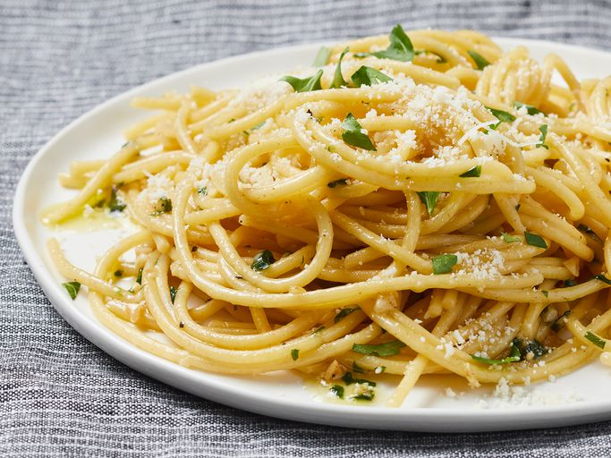

- ½ (8 ounce) package spaghetti
- 3 tablespoons olive oil
- ¼ cup chopped onions
- 1 large clove garlic, minced
- ⅓ cup sliced fresh mushrooms
- ¼ cup chopped red bell pepper
- 1 pound uncooked medium shrimp, peeled and deveined
- 1 splash white wine (Optional)
- 1 splash white wine (Optional)
- ½ cup heavy cream, or to taste
- 3 tablespoons butter
- 1 tablespoon all-purpose flour (Optional) Continue Reding....

- Meat: This super meaty lasagna has sweet Italian sausage and lean ground beef.
- Onion and garlic: An onion and two cloves of garlic are cooked with the meat to add tons of flavor.
- Tomato products: You'll need a can of crushed tomatoes, two cans of tomato sauce, and two cans of tomato paste.
- Sugar: Two tablespoons of white sugar add subtle sweetness and enhance the flavor of the sauce.
- Spices and seasoning: This lasagna recipe is flavored with fresh parsley, dried basil leaves, salt, Italian seasoning, fennel seeds, and black pepper.
- Lasagna noodles: Use store-bought or homemade lasagna noodles.
- Chesse: Parmesan, mozzarella, and.... Continue Reding....

- 1 large egg
- 1 tablespoon water
- 1 tablespoon butter
- 1 tablespoon vegetable oil
- 1 onion, chopped
- 2 cups cooked white rice, cold
- 1 cup cooked, chopped chicken meat
- 2 tablespoons soy sauce
- 1 teaspoon ground black pepper Continue Reding....